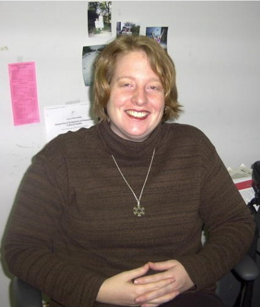
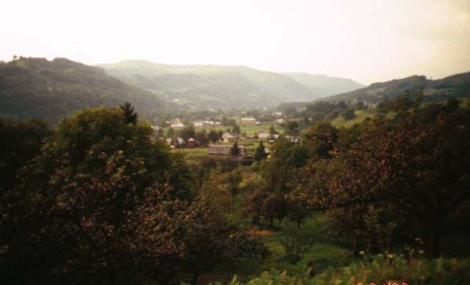

 |
Dr. Jennifer A. Dickinson is an Associate Professor of Anthropology at the University of Vermont. She received her A.B. in Anthropology and Russian from Bryn Mawr College in 1992, and two M.A.'s, one in Anthropology, and another in Russian and East European Studies from the University of Michigan (1995;1996). She received her Ph.D. in Anthropology from the University of Michigan in 1999. She has done research in several regions of the former Soviet Union, and currently focuses on Eastern Europe, and in particular, Ukraine. Her broad academic interests cover many areas of cultural and linguistic anthropology, including storytelling, conversational pragmatics, language ideologies, the anthropology of Eastern Europe, and the anthropology of work.
Dr. Dickinson's dissertation, entitled "Life on the Edge: Understanding Social Change through Everyday Conversation in a Ukrainian Border Community," combined these broad interests, exploring the ways in which everyday conversational interactions among members of a dialect-speaking border community contributed to these villagers emerging understandings of social and economic change in post-Soviet Ukraine. Her dissertation also contributes to studies of contemporary rural Ukraine, and to linguistic study of the Slavic varieties spoken in the Zakarpattja (Transcarpathian) region of Ukraine. One of the main foci of her dissertation, and of her continuing work in linguistic and cultural anthropology, is the nature of conversational storytelling, from the level of grammatical structure to the nature of topic shift and the role of storytelling in creating social cohesion and social meaning.
Dr. Dickinson has recently begun a new project that reflects her interests in linguistic anthropology, anthropology of post-socialism, and the anthropology of work. In the summer of 2000, she returned to the Lviv and Zakarpattja regions of Western Ukraine to interview people who sell goods in various city, village, and regional markets. The ethnographic and linguistic materials she collected promise to yield rich data on the transformation of work-based identities and developing notions of a "new" market profession. In December of 2001, she participated in a larger project on post-Soviet censuses by observing and reporting on the conduct of the first Ukrainian national census in the Zakarpattja region. Her latest research project, continuing in summer 2003, concerns images of Ukraine and its transition to the market economy in contemporary advertising.
Among the courses Prof. Dickinson teaches at UVM include: Human Cultures; Introduction to Linguistic Anthropology; Sociolinguistics; the Anthropology of Work; Anthropology of Eastern Europe; Business Anthropology; Storytelling in Cross-Cultural Perspective; Language and Gender; and Language in Media and Advertising.
To learn more about Prof. Dickinson, visit her web site. Also, visit Prof. Dickinson's photo gallery to see some wonderful pictures of her research in the Ukraine!
